3.3 矩阵乘法的应用
用矩阵乘法描述图论、复数、方程组和坐标变换。
进度0%
掌握 0 / 6§3.3.1
图论与矩阵乘法
矩阵(一) / 矩阵乘法的应用

\[A^2 = \begin{pmatrix}
0&0&1&1&0\\
0&0&0&1&0\\
1&0&0&0&1\\
1&1&1&0&0\\
0&1&1&0&0\\
\end{pmatrix}
\qquad
A^3 = \begin{pmatrix}
1&0&0&1&1\\
1&0&0&0&1\\
1&1&1&0&0\\
0&1&2&1&0\\
0&0&1&1&0\\
\end{pmatrix}\]
\[A^5 = \begin{pmatrix}
1&2&3&1&0\\
0&1&2&1&0\\
1&0&1&2&1\\
3&1&1&1&2\\
2&1&1&0&1\\
\end{pmatrix}
\qquad
A^{10} = \begin{pmatrix}
7& 5& 11& 10& 5\\
5& 2& 5& 6& 4\\
10& 5& 7& 5& 6\\
11& 10& 15& 7& 5\\
5& 6& 10& 5& 2\\
\end{pmatrix}
\]
这页感觉如何？
§3.3.2
复数与二阶实数矩阵
矩阵(一) / 矩阵乘法的应用
我们定义如下映射

这页感觉如何？
§3.3.3
线性方程组与矩阵乘法
矩阵(一) / 矩阵乘法的应用
通过矩阵乘法,一般线性方程组
\[
\left\{\begin{array}{ccccccccc}
a_{11}x_1& +& a_{12}x_2 & + & \cdots & + & a_{1n}x_n &= & b_1\\
a_{21}x_1& +& a_{22}x_2 & + & \cdots & + & a_{2n}x_n &= & b_2\\
\vdots && \vdots && \ddots && \vdots && \vdots \\
a_{m1}x_1& +& a_{m2}x_2 & + & \cdots & + & a_{mn}x_n &= & b_m\\
\end{array}\right.
\]
简单地可改写为
\[\label{system_of_linear_equations}\tag{$*$}
A\bf x=\bf b.
\]
其中 \(A=(a_{ij})_{m\times n}\) 为线性方程组的系数矩阵, \(\bf x\)和\(\bf b\)为列向量
\[\bf x=\begin{pmatrix}x_1\\x_2\\\vdots\\x_n\end{pmatrix},\quad \bf b=\begin{pmatrix}b_1\\b_2\\\vdots\\b_m\end{pmatrix}.\]
这页感觉如何？
§3.3.4
线性映射与矩阵乘法
矩阵(一) / 矩阵乘法的应用
线性映射与矩阵有如下一一对应
\({\mathbb F}^{m\times n}\) \(\quad\) \(\overset{\quad 1:1\quad }{\leftrightarrow}\)
从\({\mathbb F}^n\)到\({\mathbb F}^m\)的全体线性映射.
若线性映射\({\mathscr A}\)与矩阵\(A\)对应，则对于任意\(\bf x \in {\mathbb F}^n\),
\[{\mathscr A} (\bf x) = A\bf x.\]
这页感觉如何？
§3.3.5
坐标变换与矩阵乘法
矩阵(一) / 矩阵乘法的应用
给定两个仿射坐标系 \([O;\vec{e}_1,\vec{e}_2,\vec{e}_3]\) 和 \([O';\vec{e}'_1,\vec{e}'_2,\vec{e}'_3]\). 设\(O\)在\([O';\vec{e}'_1,\vec{e}'_2,\vec{e}'_3]\)下的坐标为
\(X_0'=\begin{pmatrix} x'_0\\y'_0\\z'_0\\ \end{pmatrix}\),以及\(e_j\)在基\(e_1',e_2',e_3'\)下的坐标为\(\begin{pmatrix} a_{1j}\\a_{2j}\\a_{3j}\\\end{pmatrix}\).
若空间中的点\(P\)在两个坐标系下的坐标分别为 \(X=\begin{pmatrix}x\\y\\z \end{pmatrix}\) 和 \(X'=\begin{pmatrix}x'\\y'\\z' \end{pmatrix}\),则 \(\left\{\begin{array}{l}
x' = a_{11}x+a_{12}y+a_{13}z+x_0'\\
y' = a_{21}x+a_{22}y+a_{23}z+y_0'\\
z' = a_{31}x+a_{32}y+a_{33}z+z_0'\\\end{array}\right.\)
用矩阵的乘法则表示:
\[X' = AX+X'_0\]
其中 \(A=(a_{ij})_{3\times3}\).
这页感觉如何？
§3.3.6
大模型注意力机制
矩阵(一) / 矩阵乘法的应用
以 ``我爱线性代数。'' 为例。 输入嵌入 \(X \in \mathbb R^{4\times 4096}\). 通过注意力机制输出另一个矩阵记为 \(X_1\)：
\[X \mapsto \{Q,K,V\} \mapsto X_1 \in \mathbb R^{4\times 4096}.\]
-
计算 \(Q\) 所需的内部参数矩阵 \(W_{q_a}\in \mathbb R^{4096\times 1024}\), \(W_{q_b}\in \mathbb R^{1024 \times 32768}\), \(W_q:=W_{q_a}W_{q_b}\).\[X \overset{W_{q_a} \text{ :压缩}}{\mapsto} XW_{q_a} \overset{W_{q_a} \text{ :恢复}}{\mapsto} Q \overset{\text{拆分}}{\mapsto} (Q_1,Q_2\cdots,Q_{64}) \]
-
计算 \(K,V\) 所需的内部参数矩阵 \(W_K,W_V \in \mathbb R^{4096\times 512}\)\[ X \overset{W_K}{\mapsto} K \in \mathbb R^{4\times 512}\]\[ X \overset{W_V}{\mapsto} V \in \mathbb R^{4\times 512}\]
-
注意力分头归一化\[O_i = \mathrm{Softmax}\left(\frac{Q_iK^T}{\sqrt{512}}\right) V \in \mathbb R^{4\times 512}.\]
-
输出所需的内部参数矩阵 \(W_{o_a} \in \mathbb R^{32768 \times 1024}\), \(W_{o_b} \in \mathbb R^{1024 \times 4096}\)\[ (O_1,O_2\cdots,O_{64}) \overset{\text{合并}}{\mapsto} O \overset{W_{o_a}}{\mapsto} OW_{o_a} \overset{W_{o_b}}{\mapsto} X_1.\]
这页感觉如何？